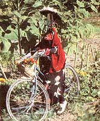
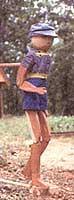
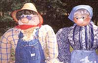
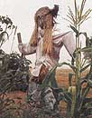
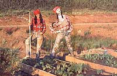
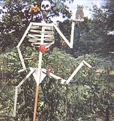
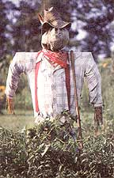
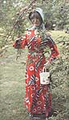
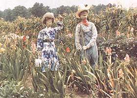
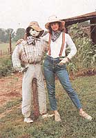

They'll startle starlings, heckle grackles and make the fiercest raven craven.
LAST SUMMER WE INVITED readers to enter MOTHER's Great American Scarecrow Contest-and the photos came pouring in! It was tough to pick the "best" from so many wonderful creations, but we finally narrowed the field to the 10 winners you see here.
Each will receive $50 and one of the following prizes, to be selected by random drawing: Olympyk chain saw, Garden Way cart, Snapper blower, Johnson fishing products package (includes Minn Kota electric trolling motor, Johnson fishing reel and Little Stinker Bait Company catfishing kit)-three to be awarded, Poulan Weedeater XT50 lawn trimmer, Daisy Red Ryder Classic BB gun, Zebco Classic rod and reel, and Coleman smoker/grill. Congratulations to our winners!
"We now have seven scarecrows, all built from a combination of tomato cages, fence posts, scrap wood, metal and old clothes-and each with a coffeepot for its head!
"When we first started making our garden friends, we didn't think anyone would notice-were we ever wrong!"
"In Yellville we call jig dancing 'clogging.' I don't know how to clog yet, but I make and sell a 12-inch folk doll that does. I decided to use the same pattern only bigger-for my scarecrow. I started with a red-cedar log about a foot in diameter and 34 inches long, and cut the arms and legs out of one-half-inch stock.
"When I first mounted my scarecrow on its dancing platform in the garden, I'd look out my window and get a funny feeling-as though there was a real kid out there!"
"Our garden just didn't seem complete without a scarecrow. That's when Henry joined us. I liked Henry and felt he had a lot of character, but he looked a little lonely out there, so I added Henrietta.
"Henry and Henrietta's main supports are seven-foot steel fence posts. I made each of their heads by stuffing the top portion of pantyhose with polyester fiber, and used the legs of the pantyhose to make arms. I coated both hats with polyurethane-and put a light coat on each nose, too-to protect them from rain."
"I made Lady Scaredeer in 1987 to discourage deer from the broccoli patch. Her hair is made of raffia, and she carries a denim purse (made from recycled blue jeans) that holds Irish Spring soap-a surefire deer repellent."
"Scarelyn, my scarecrow, is supposed to look like me; I figured if I dressed her up in my clothes, the birds would find her more believable. Ha! That lasted two days, and now they ignore her. Anyway, friends get a laugh when they see her. She's strategically located with one foot in the beet bed and one in the pea bed."
"Being on Social Security, I didn't have any spare clothes for a scarecrow. I gotta wear 'em myself. So, I made a 'scarepeople.' Hope you'll accept it for the scarecrow contest."
"Indian Joe is two years old. He fools both animals and humans. Sometimes he fools me into thinking someone else is doing the gardening chores!"
"My scarecrow was built on a heavy metal pedestal once used to display wallpaper sample books. The body is babychick wire covered with papiermache from the waist up. I gave it two coats of house paint to make it weatherproof.
"My husband feeds the birds here all year long. If I made a male scarecrow, birds would think it was him and perch on its shoulder. So I made a feminine scarecrow."
"Here are Kenny and Dolly, alias Kenny Dodgers and Dolly Parsley. Each is made from two pairs of pantyhose stuffed with polyester fiber.
"We put our garden people out each year when things start to grow, and they stay all season. Last fall our letter carrier told us they looked cold and she thought they needed coats-so I obliged. They did look more comfortable!
"Neighbors seem to equate Kenny and Dolly with my husband and me; they get waved at and honked at more than we do!"
"This is Tillie, who spent the entire season in our garden here in the Cumberland Mountains. I made her my size so she could wear my clothes. Her eyes, nose and lips are quilted.
"We don't know if she scares any birds away, but our garden is doing well, we've seen a lot of neighbors wave as they go by, and I confess I've been caught talking to her."
|
 |
 |
 |
|
 |
 |
 |
|
 |
 |
 |
|
 |
|
|